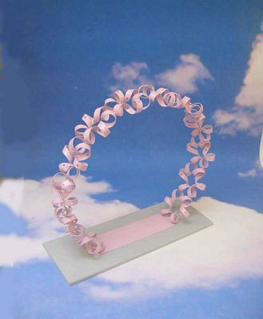

«prev
next»
The arch has been transformed to give a conceptual alternative to the traditional garden structure. Normally an arch/gate has an entry and exit which suggests a division of space. An arch is a threshold space between experiences. When one crosses the threshold we can find infinitive space. At the same time an archway can cause infinitive space to become limited space. Both arch and space are inter-changeable in terms of being either an exit or an entry point. An arch therefore links exterior and interior space. There is a strange tension as we pass through an archway and we leave one world for another. The arch itself bestows a mysterious power of transformation to its surroundings.
From in to out and from out to in implies a metaphoric action. The arch/gate represents a kind of visual continuity of movement but its purpose is to express an aesthetic value in the landscape and create a sense of anticipation and surprise.
Finally the arch connects the human element to its natural surroundings. Yet, passing through the arch/gate suggests the possibility of a dream world beyond.
2005